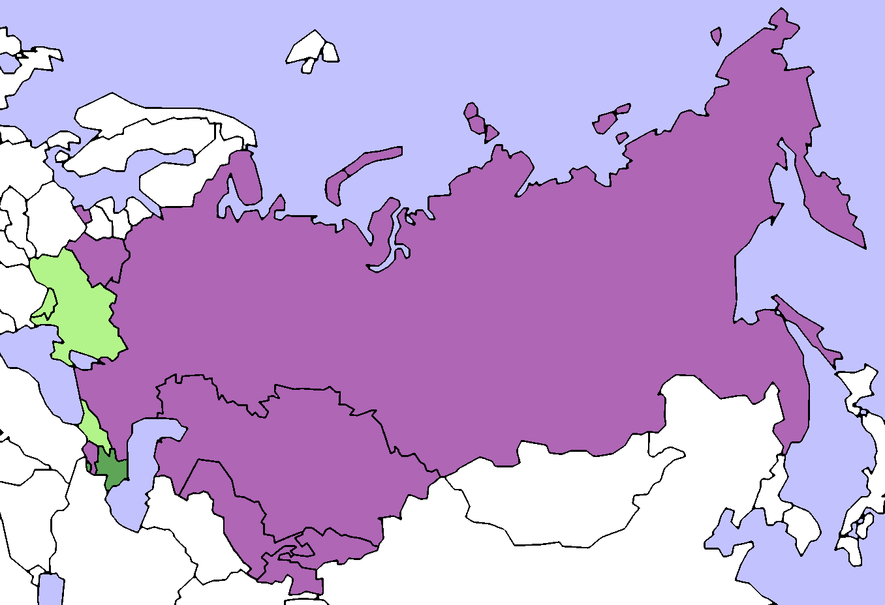

Oʻzbekistonning GUUAMga qoʻshilishi (1999) va undan chiqishi (2005)
Mustaqillikning dastlabki oʻn yilligida Oʻzbekiston tashqi siyosatda bir necha yoʻnalishni sinab koʻrdi. Shulardan biri GUUAM — Oʻzbekiston 1999-yilda qoʻshilib, 2005-yilda tark etgan post-sovet davlatlari guruhi edi. Ushbu faqat-faktlarga asoslangan maʼlumotnoma oʻsha davrni — qoʻshilishdan chiqishgacha — bosqichma-bosqich bayon qiladi. Yuqoridagi xarita MDH makonidagi geosiyosiy bloklarni (Rossiya boshchiligidagi KXShT va GUAM) umumiy koʻrsatadi va Oʻzbekistonning 2005-yildagi chiqishidan keyingi holatni aks ettiradi.

Kirish: mustaqillikning dastlabki oʻn yilligi
Mustaqillikning birinchi oʻn yilligida Oʻzbekiston tashqi siyosatda bir necha yoʻnalishni sinab koʻrdi. Shulardan biri GUUAM — 1999-yilda qoʻshilib, 2005-yilda tark etgan post-sovet davlatlari guruhi edi. Ushbu faqat-faktlarga asoslangan maʼlumotnoma oʻsha davrni bosqichma-bosqich bayon qiladi.
GUAM nima
GUAM — Gruziya, Ukraina, Ozarbayjon va Moldova mintaqaviy guruhi boʻlib, nomi aʼzolar bosh harflaridan tuzilgan qisqartmadir. U 1997-yil 10-oktabrda maslahat forumi sifatida tashkil etilgan: Yevropa Kengashining Strasburgdagi ikkinchi sammiti chetida toʻrt davlat prezidenti Qoʻshma Kommyunikega imzo chekkan edi. (GUAM tashkiloti rasmiy tarixi.)
Yoʻnalishi
Faktik jihatdan GUAM post-sovet davlatlarining Rossiya va MDHdan nisbatan mustaqil hamkorligini, Yevro-Atlantika integratsiyasiga qiziqishni, energiya-tranzit yoʻlaklarini (Yevrosiyo/GUAM transport yoʻlagi) va «muzlatilgan nizolar»dan umumiy xavotirni aks ettirar edi. Keyinroq uning maqsadlari demokratik qadriyatlarni ilgari surish, barqaror rivojlanish, mintaqaviy xavfsizlik va Yevropa integratsiyasi sifatida rasmiylashtirildi. (GUAM tashkiloti; Jamestown Foundation.)

Oʻzbekiston qoʻshiladi — GUUAM (1999)
1999-yil 24-aprelda, Vashingtondagi NATOning 50 yilligiga bagʻishlangan sammit chogʻida (uning yonida oʻtkazilgan yuqori darajadagi Yevro-Atlantika hamkorlik kengashi majlisida) Oʻzbekiston guruhga qoʻshildi va u GUUAMga aylandi (qoʻshimcha «U» harfi Oʻzbekiston uchun). (Jamestown Foundation.)
Yalta Xartiyasi (2001)
2001-yil 7-iyunda Yalta sammitida (6–7-iyun 2001) davlat rahbarlari Yalta Xartiyasini imzoladilar; hujjat guruhning maqsadlari, tamoyillari va hamkorlikning asosiy yoʻnalishlarini belgilab berdi. Bu toʻlaqonli tashkilot sari qoʻyilgan birinchi rasmiy qadam boʻldi. (GUAM tashkiloti rasmiy tarixi.)
Oʻzbekistonning sovishi (2002)
2002-yilda Oʻzbekiston oʻz ishtirokini toʻxtatib turganini eʼlon qildi va Rossiya hamda Kollektiv Xavfsizlik Shartnomasi Tashkiloti (KXShT) tomon yoʻnalishini oʻzgartirdi. GUAMning oʻz tarixiga koʻra: «2002-yilda Oʻzbekiston oʻz ishtirokini toʻxtatib turganini eʼlon qildi». (GUAM tashkiloti; EurasiaNet.)
Rasmiy chiqish (2005)
Oʻzbekiston GUUAMdan rasman chiqdi: 2005-yil 5-mayda guruhdan chiqayotganini rasmiy ravishda eʼlon qildi va shu paytda tashkilotga raislik qilgan Moldova prezidenti Vladimir Voroninga rasmiy xabarnoma yuborildi (zamondosh xabarlar; civil.ge, 2005-yil 5-may). Chiqish Oʻzbekistonning tashqi siyosatini Rossiya tomon qayta yoʻnaltirishidan keyin roʻy berdi; manbalar buni 2005-yil may oyidagi Andijon voqealaridan keyingi davrga joylashtiradi. Oʻzbekiston chiqib ketganidan soʻng guruh yana GUAMga qaytdi.
GUAMga aylanishi (2006)
2006-yil 23-mayda Kiyev sammitida GUAM davlat rahbarlari «Demokratiya va iqtisodiy rivojlanish uchun tashkilot — GUAM» tuzilganini eʼlon qildilar va uning Xartiyasini imzoladilar. (civil.ge.)
Xulosa / meros
Oʻzbekistonning olti yillik GUUAM aʼzoligi (1999–2005) uning dastlabki tashqi siyosatida Gʻarbga moyil va Rossiyaga moyil guruhlar oʻrtasidagi muvozanatni aks ettiradi. 2005-yildan soʻng mamlakat yana Rossiya tomon ogʻdi (2006-yilda KXShTga qayta aʼzo boʻldi). Bu — tasdiqlangan faktlar.

Manbalar
- GUAM Organization — official history and institutional formation (founded 10 Oct 1997 Strasbourg; Uzbekistan joined 1999; Yalta Charter 7 June 2001; suspension 2002; withdrawal 2005; 2006 reorganization)
- Wikipedia (EN) — GUAM Organization for Democracy and Economic Development
- Jamestown Foundation — 'GUAM at Ten' (Uzbekistan joined at the 1999 NATO Washington summit → GUUAM)
- EurasiaNet — GUUAM reverts to GUAM as Uzbekistan suspends its membership (2002)
- Civil.ge — 'Uzbekistan officially announced on May 5 that it quits the GUUAM' (5 May 2005)
- Civil.ge — GUAM transforms into a formal regional organization (Kyiv summit, 2006)